We're building a drivable copy of the real Baltic out of OpenStreetMap and government elevation data:
Poland, Lithuania, Latvia, Estonia, Finland, Sweden, Norway and Denmark. Every road. Every wiadukt.
Starting with Mazowsze.
a pre-alpha that is surprisingly awesome. — Tom
11,482map tiles of Mazowsze
2,601,381buildings, every one from OSM
561,875roads and railways
104,961junctions, each with its own kerbs
225 GBof elevation downloaded, 2.5 GB kept
6,950bridges (and 2 fake buildings, now gone)
500,000trees in view over Kampinos
1car that rolled over at 60 km/h
KM0
Two projects walk into a bar
12 November 2026
Baltic Drive is what happens when you take two unfinished games and staple them together.
Dead Miles, a road-survival experiment, had grown an importer that turns OpenStreetMap into
real-scale roads and buildings. All of Mazowsze, the Palace of Culture included. Thornwake, a
survival-crafting world, had the streaming engine: terrain that loads in rings around you out to
20 km, and a moving origin so the numbers never get blurry far from home.
The goal: drive from Warsaw to family in Sweden and friends in Denmark and Estonia. On real roads,
in a real car, with real ferries. And maybe, later, with zombies and seven friends.
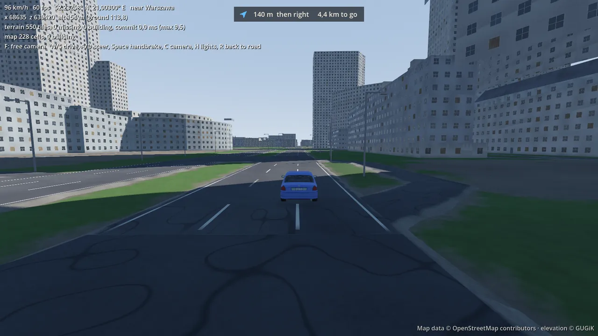
96 km/h through Śródmieście. The GPS knows where it's going. The car mostly does too.
KM1
Bending the Earth (by only 1%)
12 November 2026
The Earth is round and a game world is flat, so you have to squash it. The usual trick projects each
small region on its own, which works until you drive across the border into Lithuania.
We picked a single Lambert conformal conic for the whole loop, with standard parallels at 53° and 67°
north. Distances stay true to within about 1% from the Tatras to North Cape. Speedometers don't lie,
and roads don't break at borders. Positions are kept in double precision, and the world quietly
recentres itself every couple of kilometres so the car never notices it's 700 km from the map's
middle.
world 0,0 is 58° N 20° E, in the Baltic Sea
Warsaw sits at x 68,891, z 639,498
Pripyat would fit too. Just saying.
KM2
Every roof was black
12 November 2026
First run on a real GPU, and every roof in Poland was pitch black. Flat ones, tiled ones, the lot.
The building shader works out window spacing for every face, roofs included. A roof has no wall
length and no wall height, so it calculated 0 ÷ 0. That gives NaN, which survives every
"mix the wall colour with the roof colour" step and comes out as black. Dead Miles had only ever been
tested on a software renderer, which forgave it. The fix was two max(…, 0.01)s.
two characters of code, two and a half million roofs fixed.
KM3
The phantom wiadukt
12 November 2026
Tom lives in Warsaw, which turns out to be the best QA there is. He drove past Warszawa Ochota and
found two long concrete buildings parked on top of Aleje Jerozolimskie, where nothing like that exists.
He sent a Google Maps screenshot with the "buildings" circled in red, the viaducts in blue and the
streets underneath in yellow. That settled it. Someone had mapped the viaduct's own concrete body in 3D,
as building parts tagged man_made=bridge. Our importer had faithfully stood them on the
road as 5-metre boxes.
Bridges are now left to the road data, and underground buildings stay underground.
"In real life, there is no hole like that. It's pretty much flat terrain there."
Tom, near Dworzec Centralny, discovering the next problem
KM4
Junctions are hard. Very hard.
12 November 2026
In the first build every junction was just roads overlapping each other with rounded ends, like
spaghetti dropped on a plate. Now each junction is one surface.
find the nodes where 3+ roads meet
group the close ones (a dual-carriageway crossing is 4 nodes)
trim each road where it clears its neighbours
grow by r, shrink by r: kerbs
That last step is the trick. Grow the shape outwards by a corner radius, then shrink it back by the
same amount, and every inside corner fills with a neat arc while the outside corners stay sharp.
Roads end at the edge with a stop line, and the sat-nav learned to hop across junction surfaces.
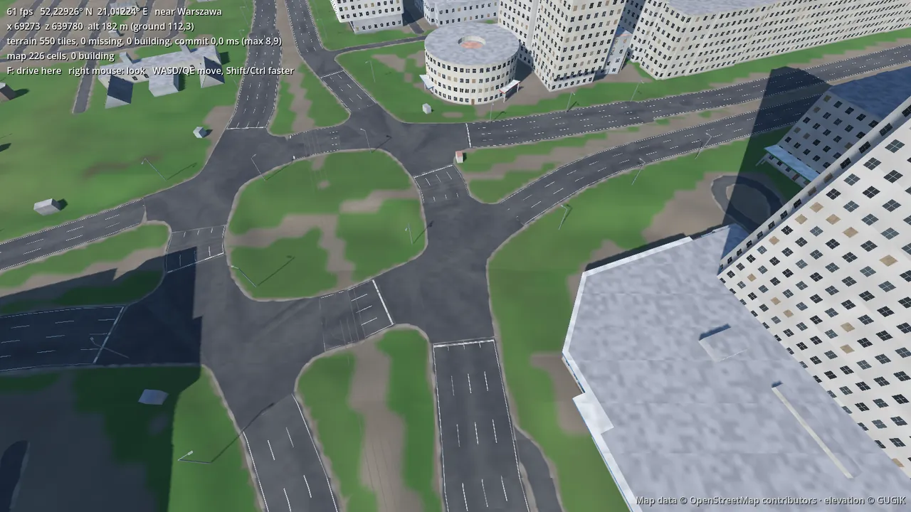
Rondo Dmowskiego, now in one piece.
KM5
Downloading Poland, one sheet at a time
12 November 2026: finished just after midnight
Why was there a pit next to Dworzec Centralny? Because over half of Mazowsze had no elevation at all.
Poland's survey office (GUGiK) serves its terrain model through a web service, but only the older
surveys. Newer sheets, central Warsaw among them, are separate downloads. We had filled 21,500 km²
of holes by copying nearby heights, which produces exactly the pits, steps and phantom ramps Tom kept
driving into.
So the importer now asks GUGiK's sheet index about every hole, downloads each survey sheet
(plain-text grids, about 36 MB a piece, 1 m resolution), shrinks it into the game's 10 m grid and
throws the original away. That came to 6,290 sheets and 225 GB of traffic in 2 hours 54 minutes, all
to keep 2.5 GB on disk. Missing terrain went from 13,076 km² down to 4,607 km², mostly at the far
edges of the map.
"It feels like we are downloading the whole world on my hard drive. I think I can hear it crying."
Tom
It started at 6 MB/s. The bottleneck turned out to be the script, not the internet: Python threads
politely queuing to parse text. After moving to eight worker processes and switching the PC from
2.4 GHz to 5 GHz Wi-Fi, it runs at about 19 MB/s.
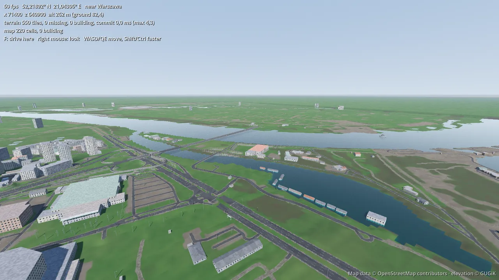
The Vistula and the Port Praski basin. Water levels come straight from the terrain model.
KM6
The map screen, and where we're going
12 November 2026
Press M and you get a road atlas drawn from the same tiles the world is built from. Click anywhere
and the sat-nav plans a route; press T to teleport while testing. Warsaw to Radom takes half a second
to work out.
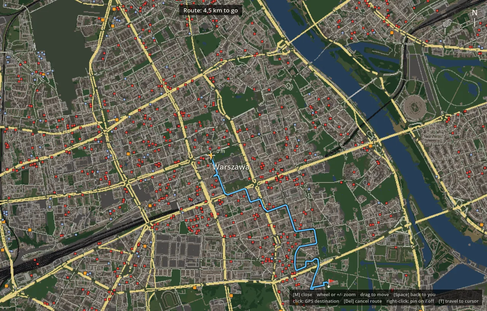
4.5 km across Śródmieście. Orange squares are fuel stations.
Next: rebuild Mazowsze on real elevation everywhere, then the slope between a ramp and the road next to
it, far-away roads, forests, and Thornwake's sky. After that, the next voivodeship, the next country,
and ferries.
The long dream is a survival game on simplified real terrain, for up to eight friends. Project
Zomboid's Kentucky is flat as a table and still endlessly fun. Here, at least, you could loot your own
street.
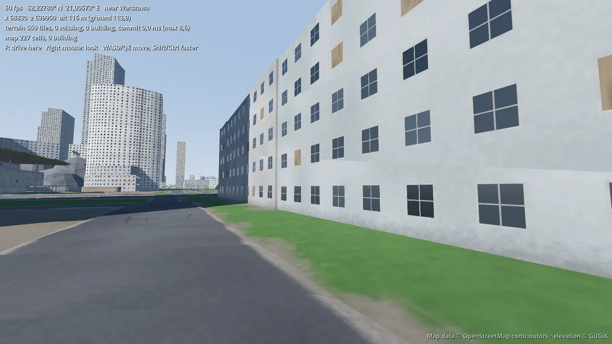
Street level. Somebody's flat is in there.
KM7
Noor painted us a title screen
13 November 2026, past midnight
While the computers argued with GUGiK's servers, Noor did the important part: she made the game look
like a game. A rusty estate car loaded for a long trip, a birch tree, a jerrycan, Warsaw at sunset
across the Vistula, and a road sign that sums up the whole plan.
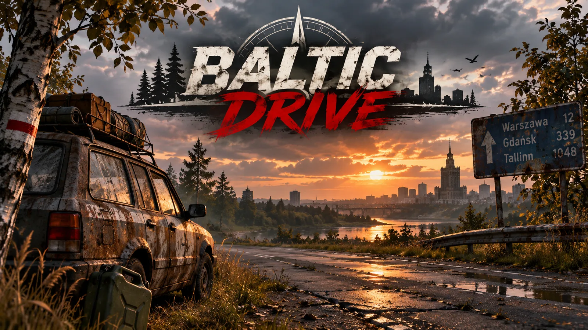
Concept art by Noor. Tallinn: 1048 km. We'll get there.
Meanwhile the elevation download finished. With real heights for most of the region, the whole map
is being rebuilt from scratch, which took Tom's PC down with it for a while. Eight Python processes
working through 11,482 tiles, 104,961 junctions and 2.6 million buildings will do that.
"Oh, so we're still processing something. That's why my PC is lagging so bad. I approve."
Tom, waking up from a well-deserved nap
6,290 sheets
225 GB in, 2.5 GB kept
8 worker processes
1 hard drive, slightly traumatised
Next stop: driving past Dworzec Centralny to see if the pit is finally gone.
And on the list of future bosses: Wrocław. Over a hundred bridges, the Oder split into channels
and islands, and streets that cross water three times in a kilometre. If the importer survives Wrocław, it
survives Stockholm and Copenhagen too.
"Wrocław will break everything."
Tom, correctly
KM8
The night shift
13 November 2026, 2–4 am
Tom kept driving and kept finding things, then went to bed and left the PC on. Here's what changed overnight.
Bridges come down properly. A bridge used to stay 6 m up for its whole length, even when the thing it
crossed was only at one end. The road after a long viaduct then stayed raised too, as a wall next to the street
beside it. That's where the car kept getting stuck near Dworzec Centralny. Decks now only stay high over what
they cross and slope down from there.
Tunnels go under things. Trasa Łazienkowska dives under Al. Niepodległości, Marszałkowska and Plac na
Rozdrożu, and the game used to build all of that at street level. Now an underpass sinks 6.5 m, the ground
follows it down into a cutting, and the street above crosses on a short deck. Mazowsze has 157 of them.
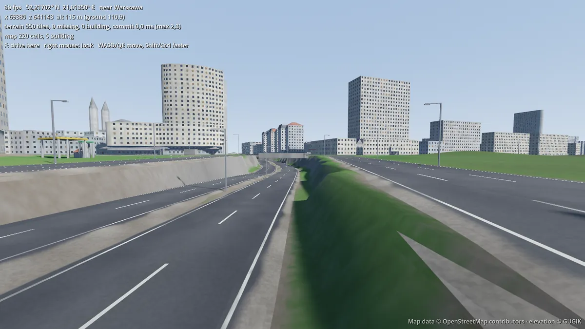
Trasa Łazienkowska, finally below Marszałkowska.
Wider streets. Ordinary streets were 5.5 m wide, which is true to life but felt tight without pavements
around them. They're 6.5 m now, and other small roads got a bit wider too. Buildings also stopped floating
at medium distance.
157 underpasses
476 short decks
42,000 km of streets widened
3 full rebuilds while Tom slept
And the test car finally arrived: 8.5 km across Warsaw, from Śródmieście to Mokotów, with no hand
on the wheel. It got stuck twice on tight corners, backed off and tried again, like the rest of us.
KM9
Parking lots, lane paint and half a million trees
13 November 2026
Tom woke up, drove around and sent a list. It was a good list.
Parking lots are asphalt now. They used to be painted on the ground like a field of packed dirt. Now
every car park, fuel station forecourt, square and mapped carriageway area in OpenStreetMap is a real paved
surface: 56,785 of them in Mazowsze. The parking aisles across them lost their dirt verges too.
A car park by Dworzec Centralny. Finally somewhere to leave the car.
Lanes add up. A road mapped as 2 lanes one way and 1 the other used to get a lonely centre line down
the middle. Now the importer reads the lane split and paints it. And where a road grows from 2 lanes to 3, it
used to jump sideways in one step. Now the extra lane opens gradually over about 40 m while the other lane
lines stay put, like real road paint. There are 15,556 of those tapers in Mazowsze.
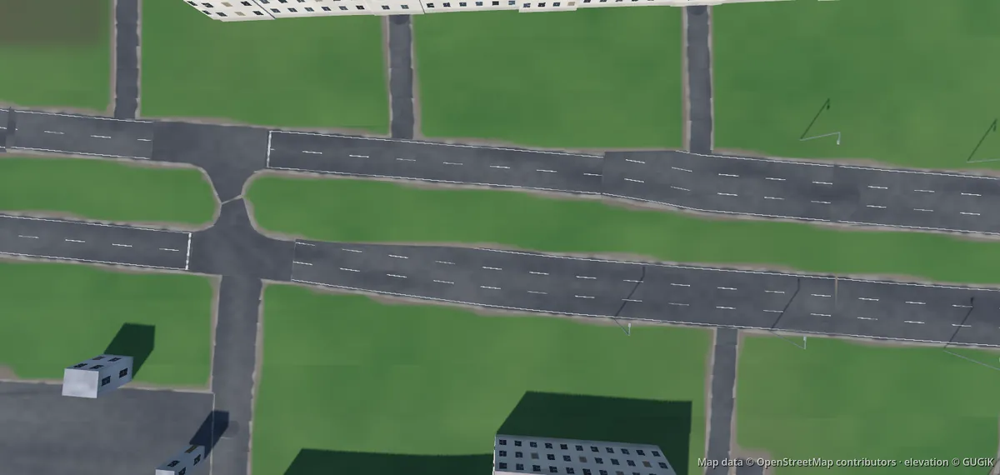
Banacha, growing a third lane the polite way.
"One of Bad's ideas works. Employee files complaints against the city planner. Who placed the
street lamp in the middle of the street?"
Tom
Fair complaint. Lamps are mapped at the real kerb, and our streets are a metre wider than life, so some of
them ended up on the asphalt. They now step back onto the verge. The city planner has been demoted.
And then: trees. Tom picked his own Thornwake Woodland pack: pines, spruces, oaks, birches, poplars and
willows. Every tree OSM maps on its own is planted, and forests, parks and cemeteries are filled in. Mazowsze's
forests come out mostly pine, as they really are. Up close they are full 3D models. Further out they hand over to
lighter ones, and past 700 m to flat pictures of themselves, so the forests reach the horizon. Trunks are solid,
so watch it.
Łazienki in November. The autumn colours wait for real seasons and weather.The edge of Kampinos. 11,000 trees in 3D and half a million in the distance, at 60 fps.
56,785 paved areas
5,186 roads with a lane split
15,556 lane tapers
17 tree species
~500,000 trees in view over Kampinos
Next on Tom's idea list: fences and walls from OSM, pavements along town streets, and one day an editor to
replace the boxes with real buildings.
KM10
A sky worth looking up at
13 November 2026, evening
Until today the sky was Godot's default gradient: a blue wash, a grey horizon, a sun that never moved. Tom
wanted lighting that builds atmosphere, volumetric clouds, and later a day and night cycle. Thornwake already
had all of that, tuned over weeks of Tom's screenshots and Noor's notes, so it came over to Baltic Drive.
The clouds are real volumes. They're drawn behind the world and in front of it, so one day you'll be able to
fly into them. They drift with the wind, high cirrus and low scud on their own breezes, and their shadows slide
across the fields. The sun is the real sun over Warsaw: it rises in the right place and sets in the right place
for the date, and two keys move the clock.
19:36 over Saska Kępa. Thornwake's clouds, Warsaw's sunset.
The look itself is Tom's: the settings came straight out of his Thornwake config file, from the warm
low sun and cool shade to the glow and the "Fantasy" colour grade at 60 %. One thing had to change. Thornwake's
haze is tuned for a character walking in a valley; seen from a car with 20 km of Mazowsze in view, it turned the
whole world beige. Here the air is thinner, clear autumn air.
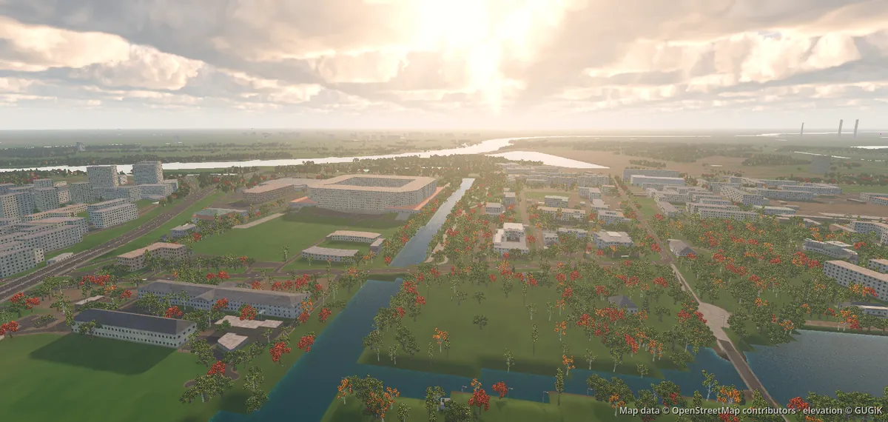
7:00. Morning haze over the Vistula.
Night is dark but readable: moonlit facades, stars between the clouds. The moon is a stand-in for now, always
full. Thornwake's proper moon, with phases, comes later with the weather.
23:00 on Ochota. Street lamps that actually light up: on the list.
Roads to the horizon. With 20 km of view, it became obvious that roads stopped after one kilometre and
the landscape beyond was roadless grass. Now every main road and railway runs on to the horizon as a light ribbon
that widens with distance, so it never shimmers away. You can follow the S8 or the railway out of Warszawa
Zachodnia all the way to the haze.
The road network, finally reaching the edge of the world.
And the mystery of the magenta specks on the horizon, there since day one, is solved: a few distant ground
pixels had invalid colours, and the tone mapper painted them neon. One clamp, gone.
volumetric clouds
the real sun for 52° N
roads drawn to ~9 km
60 fps at golden hour
0 magenta specks
Near Kampinos. Graphics don't make a game, but they make you want to drive.
KM11
Good fences make good neighbours
13 November 2026, late evening
Noor pointed out how much is hiding in an OpenStreetMap file. She's right. Mazowsze alone maps 223,000 fences,
19,000 hedges, 11,000 walls, 3,400 guard rails and 144,000 gates. Until today none of them existed in the game.
Now they all do.
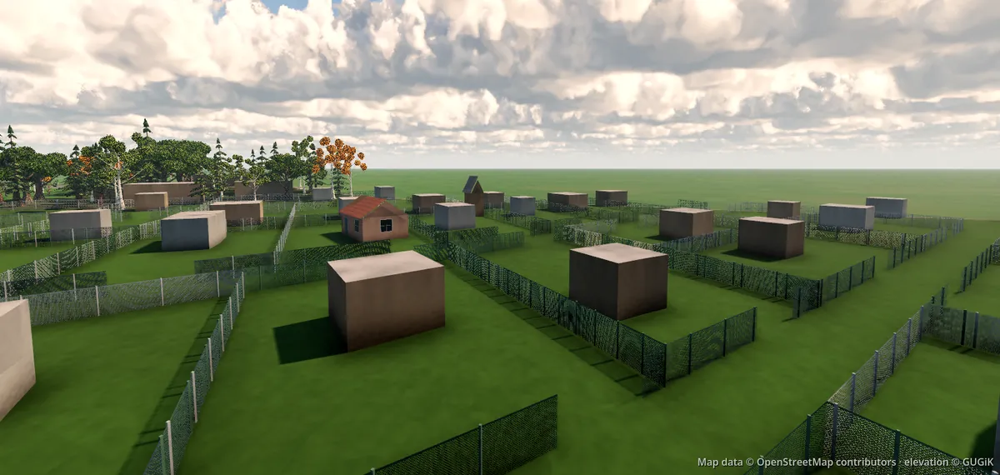
Działki. Every plot, every shed, every fence.
Each fence follows the ground, leaves an opening where a gate is mapped, and steps aside wherever it would
cross a road (mappers often draw a property fence straight across a driveway). Chain-link is actually see-through
and turns into a light veil in the distance instead of a dark wall. Walls come in brick and plaster, hedges have
a ragged leafy top, motorways get their noise barriers, and the car stops at all of them.
Chain-link up close. A survival game's favourite material.
"Oh my god. This is starting to look like that new mod for Project Zomboid called Viewpoint."
Tom
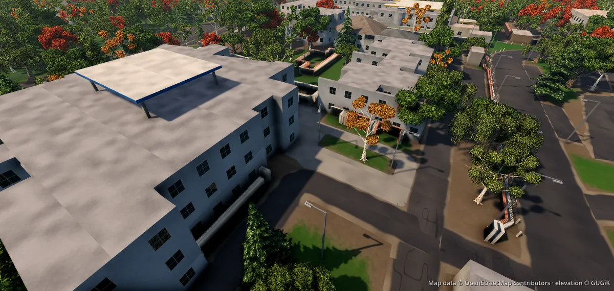
Brick walls around the courtyards of Mokotów.
The clouds tell time now. Tom spotted that moving the clock moved the sun but not the clouds: the big
ones just sat there. Now they live on game time. Jump half an hour and the whole sky has drifted 17 km downwind
and changed shape.
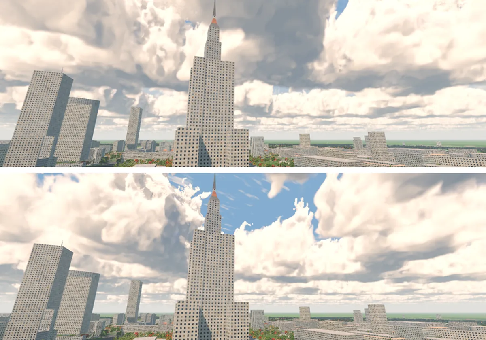
13:00, and the same place half an hour later.
261,615 barrier lines
127,850 gates
46,789 bollards
10 kinds of fence and wall
1 Project Zomboid comparison
KM12
Buildings with a backstory
14 November 2026, through the night
Until now every building in Baltic Drive was a box with windows painted on by a shader. Tonight a lot of
Warsaw got real buildings: window openings you can see into, balconies, shop fronts, chimneys and gates.
A street of kamienice. Every one of them was generated from its OpenStreetMap footprint.
They come from BadBuilding, a new library of ours that grew out of Tom's idea: take a footprint from the
map, look at what's around it, and build a whole building that fits. It doesn't just extrude the outline. First
it reads the site. Which walls face the street, which ones touch the neighbours (no windows there: that's a
firewall), how the ground slopes, and whether there is a courtyard inside. Then it picks a style.
PRL blocks: concrete panels, balconies stacked in columns, glass-block strips over the staircases,
lift rooms on the roof.
Kamienice (pre-war tenements): a dressed street front with window surrounds, a cornice and shops on
the ground floor, a plain yard at the back, bare brick firewalls with chimney stacks. Not all of them are
equally ornate, and a building only gets the rich treatment when the map says it really is pre-war.
Plain buildings for everything else.
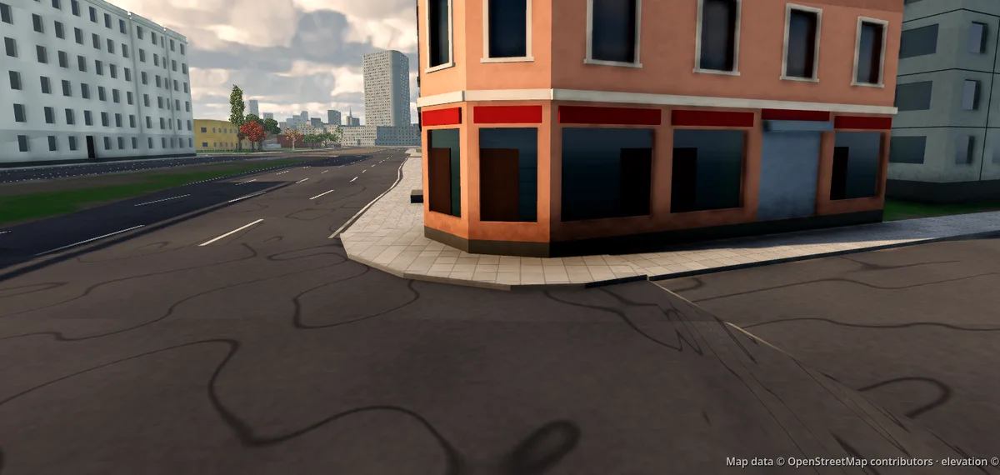
Corner shop, one shutter down. Survival game rule: check the shuttered one first.
Noor kept the architecture honest. She and Sage now talk through a question file in the BadBuilding
repository, with pictures, and she reviews every step. Her first catch was a courtyard block with no way into
the yard. "Residents must arrive by helicopter," she wrote. So now every courtyard gets a brama, a real
gate passage through the ground floor that you can drive through, and some of the gates are closed with a
small door in one leaf. She also insisted that missing data is never evidence. A building only becomes an
ornate tenement when OpenStreetMap knows it is old. And where the map shows shops, the shop fronts go there
and nowhere else.
A brama, from the library's own test gallery. The yard behind it is reachable now.
"Please don't accidentally give every building a golden dome now."
Noor
In the game, the buildings are made on the fly as you drive, on background threads: about 11 milliseconds and
4,400 triangles each. A 6 km flight over central Warsaw still holds 60 frames per second. For now they cover
flat-roofed town buildings within 600 m, and they're behind a switch: press F7 to flip between the new
buildings and the old boxes. Houses with pitched roofs, churches and towers keep their old shapes until the
library learns roofs. That's next.
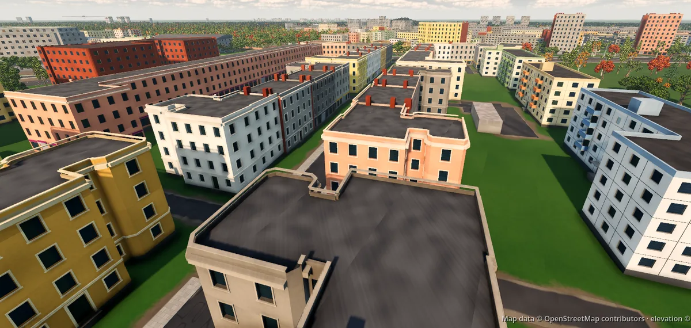
From above: chimneys on the firewalls, parapets, courtyards.
"If it has balconies and/or chimneys... must be BadBuilding."
Tom
Also new: pavements and an F9 key. Town streets got 12 cm kerbs and grey slab pavements that turn
round the corners. Tom drove into enough odd kerbs to suggest a debug key: F9 now saves a screenshot and a
report of everything at that spot, and his dumps fixed kerbs in the middle of the road, pavements on tram
tracks and a few gaps.
7,530 buildings in one test drive
0 fell back to boxes
3 building styles
1 courtyard rescued from helicopter-only access
0 golden domes
KM13
Sunday service
15 November 2026
Tom took the prototype out for a silent live stream on YouTube: a sunset drive through Warsaw, 38 fps at worst
with OBS running, bugs shown honestly. Then came a list of F9 dumps and "I noticed something" messages. Sunday was
for fixing them.
The window that vanished. Fly far away in the free camera, press F to drive there, and the game simply
closed. A new self-test does exactly that, over and over, and it crashed on the second try. Every frame the car
asked each wheel what it was standing on. After the jump, Godot's wheel still pointed at a piece of ground that
had just been unloaded, and touching it brought the whole game down. Now each wheel looks down with a short ray
of its own. Eight rounds of fly-and-press-F later, nothing.
Plac Konstytucji, before and after. The square had swallowed its own avenue.
Squares that ate their streets. OpenStreetMap draws a square as one big shape, and we laid it flat at
ground height. The streets crossing it sit a little lower in their own beds, so the square covered them:
lanes, tram tracks, markings, all gone. Near the Wisłostrada tunnel a paved area even looked like a wall of earth
across the road. Now the street corridors are cut out of every square and car park before it's built.
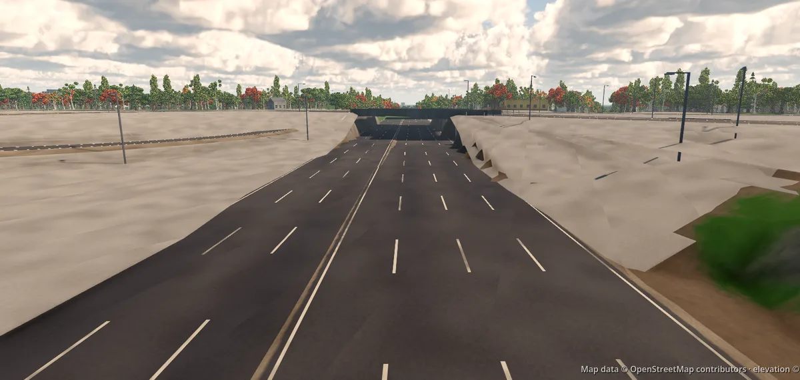
Where the "wall of earth" stood: just the road again.The Vistula's bank. It used to come in 8 m steps.
Rivers with stairs. The river bed was carved on an 8 m grid, and the game treated a whole 8 m square as dry
if any corner of it was. Banks came out as staircases. The importer now measures how far every point is from the
real shoreline and shapes the bank from that, and the water runs on until the land rises out of it. While we
were at the river: fences, quay walls and the moored barges (Warsaw's floating bars, mapped as buildings) were
standing on the river bottom. They float now.
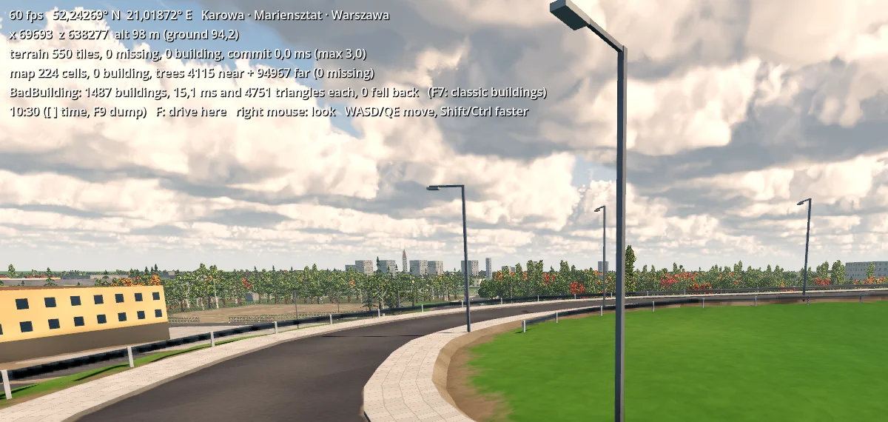
"Karowa · Mariensztat · Warszawa". Before, it just said "near Warszawa".
Where am I? The map files now carry street names, house numbers and every building's OpenStreetMap id
(the key for hand-made replacements later). The screen tells you the street and the nearest number on it, the
district, then the town. Street names on the map screen are next.
Smaller wins: 16-storey blocks of flats now come from BadBuilding with their balcony columns instead of
grey boxes, the cornices on kamienica corners close properly, and road edges stopped wobbling.
"Why is this balcony sticking out at a 37-degree angle? Source: inferred. Confidence: 0.42. Architectural justification: Poland."
Noor
Next: roofs for BadBuilding (Noor has approved gables, hips and mono-pitches; domes remain under international
sanctions), then getting out of the car. There's a brief for walking the streets, finding supplies and meeting
bandits.
1 crash with its own self-test
23,489 squares and car parks cut around their streets
31,486 street names and house numbers
0 rivers with stairs
1 live stream
KM14
Roofs over our heads
15 November 2026, afternoon
Same Sunday, second shift. Tom asked for street names on the map, then a GTA-style radar, then roofs. It
turned into a very good afternoon.
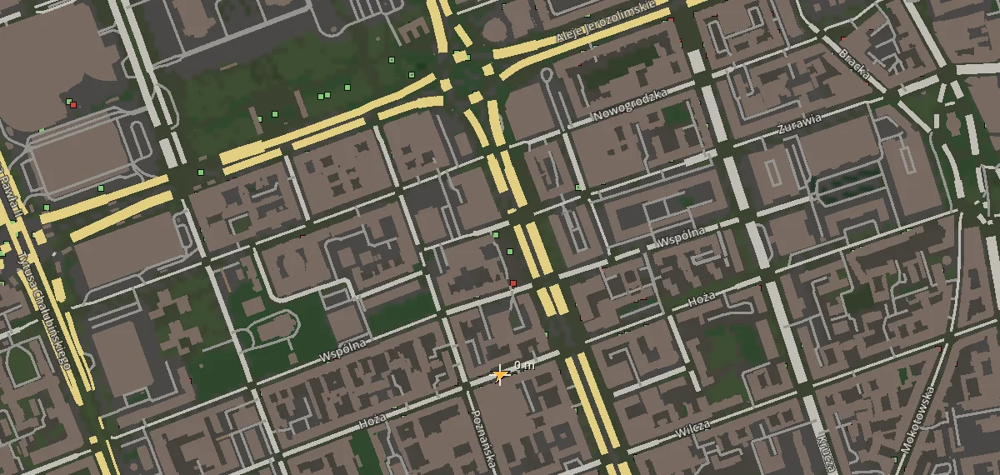
The map, zoomed in. Every street has its name now.
Street names on the map. This morning the map files learned the names of 31,486 streets and house numbers.
Now the map shows them, written along each street and never upside down. Zoomed in, the old blocky map picture
gives way to sharp roads at their real width and the outline of every building.
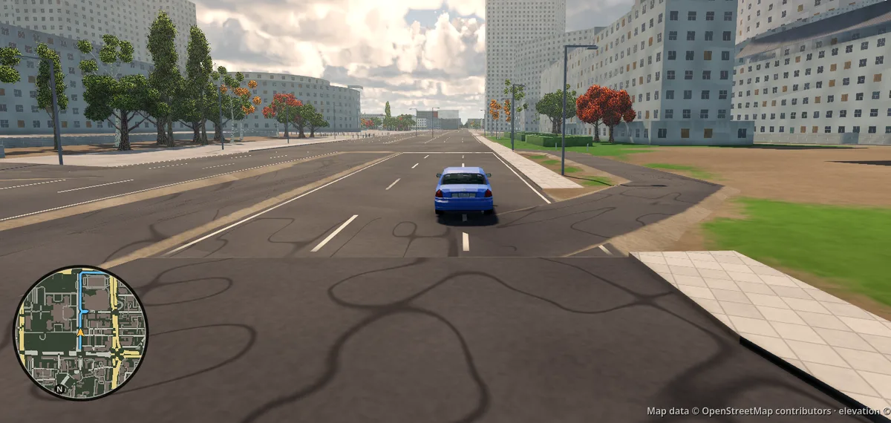
The radar. Ahead is always up.
A radar in the corner. A round minimap that turns with the car, zooms out a little when you speed up,
and shows the roads, buildings, street names and your GPS route (now only the part still ahead of you). It's
the smallest feature this week, and the one that made it feel most like a game.
Roofs. Until today, everything BadBuilding built had a flat top. Now houses get gabled or hipped roofs in
clay, brown, grey or black tiles, with eaves over the walls and gable ends. Barns get long, shallow roofs and big
doors. Kamienice got the roof Noor asked for, sloping from the street down to the courtyard and hidden behind the
street front, the way most Warsaw tenements really do it. Whatever the map says about a roof wins; where it says
nothing, the style makes a believable guess and says so.
From the library's gallery: a gabled house and a hipped villa.
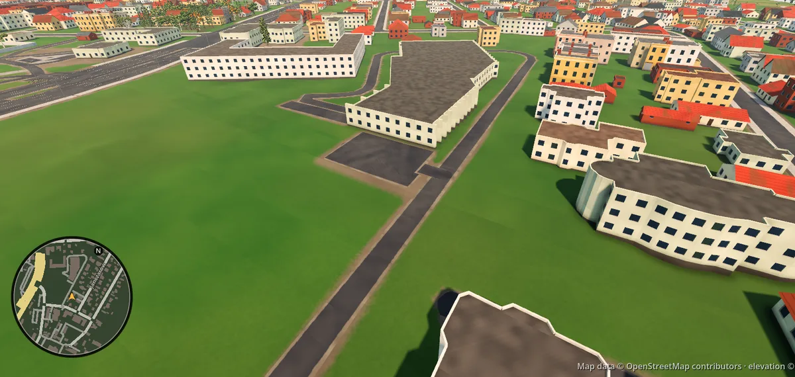
The suburbs, from above: red roofs as far as you can see.
With roofs done, BadBuilding now also builds the houses, barns and sheds out in the suburbs and villages.
A house takes about 4 milliseconds to generate, and a fly-over of the western suburbs still runs at 60 fps.
A village near Zakroczym, between two barns.
And a house in the middle of the road. Tom found one in that same village. The map had a building
drawn across the road, which happens with hand-traced village data. A building that a public road runs straight
through is now treated as a mapping slip and left out.
"Oh my god! Amazing, this is so good!"
Tom
Domes are still drawn flat. Noor's embargo holds.
31,486 street names on the map
1 radar
3 kinds of pitched roof, plus 1 sloping to the yard
~4 ms per house
0 golden domes
KM15
Out of the car
15 November 2026, evening
"Let's get out of the car, take a walk and get some kebabs," said Tom. So we did. Press E and you step out by
the driver's door. Then you walk, run, sprint, crouch and jump through the same streets you just drove, in third
person over the shoulder or first person (V). Walk back to the car, press E, and you're driving again.
Out for a walk on Hoża. The car waits with its handbrake on.
Our walker is a guy in a red hoodie and a green beanie from the Synty City pack, which already gave us the car.
For the first hour he moved with a walk cycle written in code: arms swinging, knees bending, a little bob. It
worked, but it looked like what it was. Then Tom found Synty's Base Locomotion animation pack in his collection.
The animations were made for Synty's own skeleton, not the one the character uses in Godot. The fix was hiding in
the City pack itself: Synty's own Godot import settings already contained the mapping between the two skeletons.
We reused it, and the real clips dropped straight onto him.
Left: the stand-in walk cycle. Right: Synty's sprint.
He now idles, walks, jogs, sprints, crouches, steps backwards and sideways, and falls, all blended by how fast and
which way he's going. The radar, the map and the "where am I" line follow you on foot too.
What's next. This is the first step of the on-foot brief Tom and Noor wrote: a small survival layer with
gunplay that has to feel great, a Mosin-style bolt-action, a pistol and an AK, supplies hidden near real shops,
and a few bandits. The kebab shops are mapped in OpenStreetMap, by the way. They'll make excellent food caches.
"Let's get out of the car 😃 take a walk and get some kebabs."
Tom
17 animation clips
1 red hoodie
2 cameras (shoulder and eyes)
4.5 m: how close to the car you need to be to get in
0 kebabs found yet
KM16
Three guns and no hands
15 November 2026, late afternoon
The on-foot brief says the shooting has to feel great, so we started with how a gun is held before anything gets
shot. Press 1, 2 or 3 and a Mosin-style bolt-action, an AK or a pistol appears in front of your eyes. Right mouse
raises it to your eye, and you look down the real sights. Aiming is always first person, even from the
over-the-shoulder camera. Let go and you're back where you were.
The AK in the middle of a shot: front sight on target, a casing on its way out.
There are no animations for any of this yet, so everything is done in code. The gun sways against the mouse and bobs as you
walk. Recoil pushes the view up and the gun back into your shoulder, then both settle. Reloading tips the gun
and drops the magazine out. The Mosin's bolt really works, because it's a separate part of the model: after
each shot it goes up, back, forward and down again.
Bullets aren't instant. Each one flies at its gun's real muzzle speed (the Mosin at 860 m/s, the pistol at a
lazy 360) and drops under gravity, checked against the world every frame. Where one lands it kicks up dust the colour of the
ground and leaves a mark. The bangs and clicks are placeholders made in code, built in layers (crack, thump,
tail) so real recordings can replace them one at a time.
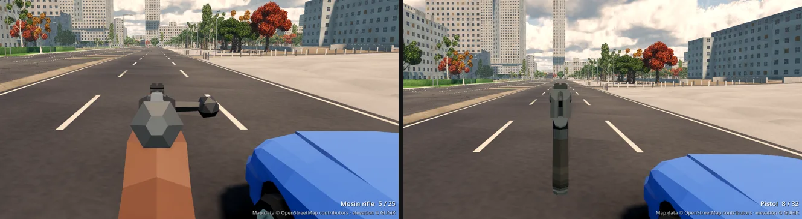
Sight pictures, measured off the models: the Mosin (still a bit busy) and the pistol at arm's length.
Tom caught the AK with its magazine sticking out sideways during a test run. The asset pack's prefab has the
magazine, slide and trigger turned 90° about Y. They're now squared up when you pick the gun up.
What's next. Hands (the guns float in the air for now), something to shoot at, and real sounds.
"I noticed during your test that the ammo clip for the AK is sideways."
Tom
3 guns
0 hands
860 m/s
1 magazine sideways, now straight
still 0 kebabs
KM17
Somebody give that man some hands
15 November 2026, evening
At KM 16 the guns floated in mid-air like a ghost was holding them. None of the art packs we own has
first-person arms, but we already had a pair: the walker's own. A second copy of the guy in the red hoodie now
rides along with the camera. His head and legs are hidden (we checked: you don't want to see your own
collapsed face from the inside), and his arms reach forward for the gun.
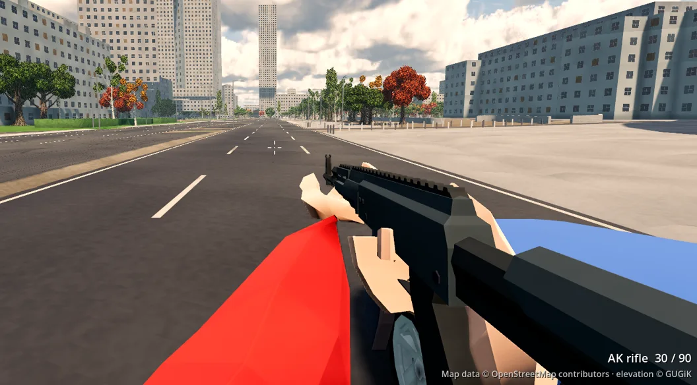
Right hand on the grip, left under the handguard. Same red hoodie as in third person.
There's no animation behind it, only geometry. Every frame, each arm works out where its elbow has to be so
the hand lands on the right spot: the grip, the handguard, the magazine during a reload, or the Mosin's bolt
knob when you work the bolt. Then the fingers curl round whatever the hand is holding. When a gun is held
further out than a real arm reaches, the arm quietly stretches a little. Games have done that for decades;
nobody ever notices.
The Mosin mid-reload, and the pistol held two-handed.
Getting there took a few tries. The first fingers curled so hard they came round and pointed back at the sky.
The left arm came up short of the AK's handguard. When we moved the body forward to fix that, dark triangles
appeared over the screen: the hidden head, smeared across the view. Moving the body back and letting the arm
stretch fixed both.
What's next. Something to shoot at.
2 arms
2 bones each
3 fingers per hand (Synty mittens)
30 %: the most an arm will stretch
still 0 kebabs
KM18
Tin cans and a sweet-wrapper wrist
15 November 2026, evening
Guns are no fun without something to shoot. Press T on foot and a little range appears wherever you're
standing. At 8 m there are cans and bottles on two oil drums, at 15 m a paper target, and steel plates at 25, 50
and 100 m. Everything finds the real ground under it, so you can set it up on Emilii Plater or in a field
outside Grójec.
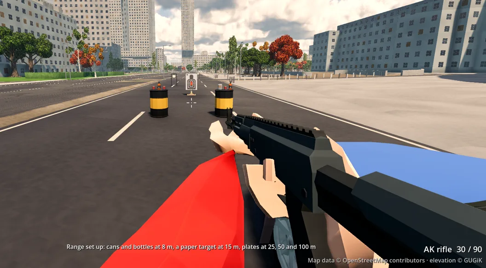
The range on Emilii Plater. The plates at 50 and 100 m are out there somewhere.
Each target reacts in its own way. Bottles shatter into a dozen shards. Cans jump and spin off the drum. The
paper target scores your shot from 10 down to 1. The plates, which we built in code because no art pack had
any, hang from a hinge: hit one and it swings back and rings. That ring is how you know you hit at 100 m, where
the plate is a white dot and the bullet takes a seventh of a second to arrive. A hit flashes a small X round the
crosshair and a note: "plate, 50 m", "target: 10, 15 m".
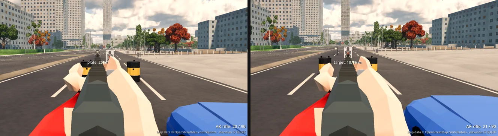
Ding at 25 m, and a ten at 15.
Underneath, every bullet now asks whatever it hit, "do you react to being shot?" Bottles, cans and plates
say yes today. The bandits will answer the same question later.
Tom also spotted something in the hands from KM 17: the left wrist was pinched thin, like the twisted end of
a sweet wrapper. The hand was taking all the turn of the forearm at the wrist joint. Real forearms don't work
like that: the two bones cross over and the twist spreads along the whole forearm. Now ours does the same,
with most of the turn moved from the wrist into the forearm.
Before and after: the twist moved from the wrist into the forearm.
"Left arm in the wrist. I think it's twisted because the wrist is so squeezed."
Tom
12 targets
12 hits in the self-test
0.133 s to the 100 m plate
12 shards per bottle
80 % of the wrist's twist now in the forearm
KM19
My twin brother, and a quieter GPU
15 November 2026, evening
Tom got out of the car and found he wasn't alone. A second guy in a red hoodie stood glued to him, arms out in
a T, following him everywhere.
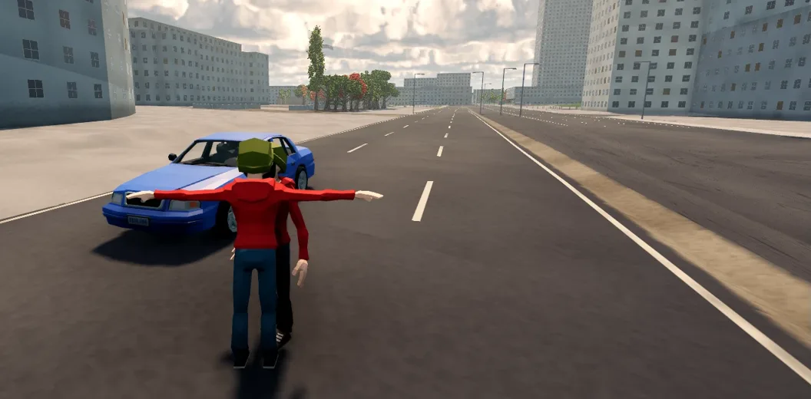
"I guess he really, really loves me."
He was the copy of the character that lends you his arms in first person (KM 17). The game only decided
whether to show him while a gun was out, and he started out visible. So with no gun in hand, he stood at your
eye level in his default pose. In first person you never noticed, because the camera was inside his head. In
third person, there he was. Every automated test had a gun drawn, so none of them caught it. Now he stays
hidden until a gun comes out.
Tom also admitted he keeps forgetting the game is still running in the background, and wondered why his GPU
fans were humming. Baltic Drive now notices when it loses focus and drops to 10 frames a second. Click back in
and it runs at full speed again.
"When I exit the car, I have my twin brother in T pose stuck to me."
Tom
1 twin, sent home
10 fps in the background
0 tests that ever looked without a gun
KM20
Finally, a zapiekanka
15 November 2026, evening
The on-foot brief asked for a small survival loop: health, hunger and thirst, with "clear effects but no
tedious micromanagement". So there's no eating menu. Food and water you carry get used by themselves when you
start running low. Hunger and thirst only drop while you're on foot (a long drive shouldn't starve anyone),
faster if you sprint. Too thirsty and you can't sprint; an empty stomach slowly costs health; fed and watered,
you heal. H uses a medkit.
Supplies sit in crates, and where a crate turns up depends on the real map. As you walk, the game looks at
the shops, diners, pharmacies, petrol stations and police stations OpenStreetMap knows within 150 m, and some
of them get a crate on open ground nearby. What's inside follows the place: food at shops, medkits at
pharmacies, ammo at police stations, a hot dog at the petrol station. The same place always has the same luck.
And anything with "kebab" in its name hands out kebabs, because that was Tom's very first wish on foot.
A crate in the yard behind a real milk bar. Milk bars hand out zapiekanki.
Still 0 kebabs, though. The first crate the test found was by a milk bar. We'll take it.
45 minutes from full to hungry
30 minutes to thirsty
150 m: how far around you crates are looked for
2× zapiekanka
still 0 kebabs
KM21
They shoot back
15 November 2026, night
The brief wanted human bandits rather than zombies: people who patrol, notice you, shoot from cover, react to
hits and come to investigate gunfire. No bullet sponges and no perfect aim. Now they exist. Out on foot, a group
of two or three sometimes appears out of sight, 90 to 150 metres away. It's never more than one group at a time,
and never two fights in a row. (Press B and a group appears just ahead.)
Relaxed, then not. The red edge means you've been hit.
They're built from the same parts as you. They walk with the same animations, their hands are put on their
guns by the same arm code as your first-person arms, and their bullets are the same bullets as yours, with
travel time and drop. A bandit sees you if you're in front of him with a clear line, sooner up close and later
if you crouch. Your shots carry 150 m, and the first one to spot you calls in his mates. Then they run for
cover, pop up for a burst and duck down again.
The first version was a massacre. Three of them took Tom's walker from full health to the floor in about
two seconds, before the test had even fired back. Now their first burst goes wide, their aim never settles
completely, and they hit for less than you do. A Mosin round drops one; with the AK it's three body hits or
one to the head. Afterwards you can search the bodies for ammo, and sometimes a tin of beans.
30 metres.
Along the way: every bandit used to set off walking toward the map's origin point in the Baltic Sea. One
of them turned out to be wearing a police uniform. And the dead dropped into T-poses. All fixed.
2–3 bandits per group
70 m: how far they see
150 m: how far they hear
30 %: how hard they hit, compared to you
1 policeman, retired
KM22
A pavement of no length at all
15 November 2026, late evening
Tom pulled up on Tamka in Powiśle and found a pavement slab cutting diagonally across the road, right where
it meets the junction with Dobra. He pressed F9, and the dump had what we needed.
Left: Tom's dump. Right: the same junction from above, fixed.
The culprit was a piece of road with no length at all. Where Tamka gets cut at the edge of the junction, the
cut left two copies of the same point, so the last piece started and ended in the same place. A piece with no
length has no direction, and the game quietly assumed "north". That bent the corner beside it, and the
pavement drawn along that non-piece stretched from one direction to the other, right across the road. The
check that stops pavements crossing other roads let it through too, since a piece of no length can't be in
anyone's way.
Now such a piece borrows its direction from its neighbour and isn't drawn at all. The fix lives in the game
rather than the map, so every other junction in Mazowsze with the same problem is fixed too, without
rebuilding a single tile. The F9 dump also got a little smarter: it now lists every pavement nearby, whether
it was kept or left out, and how much room it has beside the kerb. That's how this one gave itself away.
0.00 m: the piece's length
1 slab, gone
0 map tiles rebuilt
1 dump, very useful
KM23
Something in his hands
15 November 2026, late evening
"Running around carrying a gun and not seeing the gun in my hands looks weird," said Tom. He was right: in
third person the guy in the red hoodie strolled through Warsaw empty-handed, and his AK only appeared when he
aimed and the view jumped to first person.
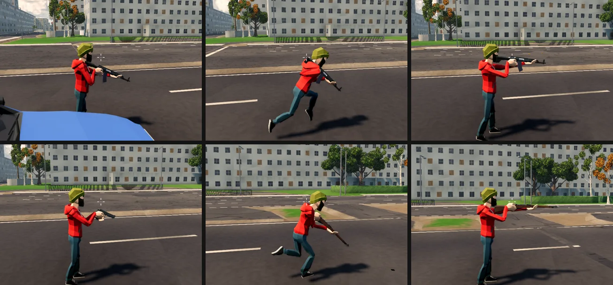
AK walking, sprinting and firing; the pistol; the Mosin at a run and on the shoulder.
It turned out to be the easy part, because the bandits already had everything: the gun models, the code that
puts hands on a gun after the walking animation has moved the body, and a sense of where the hands go. Now you
carry the gun at the ready, lower it when you sprint, and bring it up to the shoulder when you fire. With a gun
out you also face where you're looking and strafe, like a shooter, instead of turning to run wherever your
feet go. Put it away and he walks normally again.
And a confession. Tom also found he couldn't switch to first person any more. That was Sage's doing: the change
that stops test runs grabbing his mouse had a missing pair of braces, which quietly disconnected V, Esc and the
medkit key. Two characters fixed it. The tests now press those keys themselves, the way a player does.
"Running around, carrying a gun, and not seeing the gun in my hands looks weird."
Tom
3 guns in hand
0 new art
2 braces, sorely missed
still 0 kebabs
KM24
Left for dead, come round by the car
15 November 2026, night
A polish round, the kind the brief asks for before anything new gets added. Three things that showed up
once Tom started actually playing.
Crates on the radar. Supplies were there, but you only found them by stumbling over them. Now the radar
marks every crate nearby with a small amber box (white with a red cross outside a pharmacy) and every body
worth searching with a little cross, and greys them out once you've looked. Bandits stay off it: spotting
them is your job.
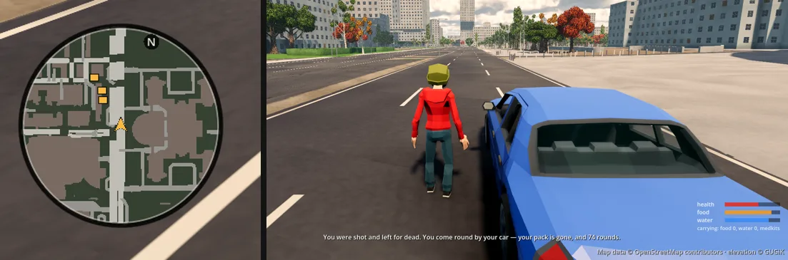
Three crates on the radar, and what happens if the bandits win.
Dying. Until now, hitting zero health meant "you black out and wake up at 40", right where you fell.
Now the screen goes dark, and you come round beside your car. Your pack is gone (food, water, medkits) along
with half your spare ammunition, but you keep the guns and whatever's loaded in them. The bandits move on. It
stings, but you're straight back in the game, and the car is still yours.
Bandits shouldering their rifles. They were aiming from the chest, and it took a measurement to see
why. A bandit's eye height was a fixed guess, 1.6 m standing and 1.05 m crouching, and it switched the moment
he decided to crouch, before his body actually moved. So the gun dropped to his belly while he was still
standing up. Now his eye comes from where his head really is. The rifle sits at his cheek, and he shoots over
cover better too, so be careful out there.
Chest, then cheek.
3 crates on the radar
60 health on coming round
half your spare rounds lost
0.9 m → 1.45 m: where the bandit's gun sits
KM25
Buildingception
16 November 2026, just past midnight
Tom took Baltic Drive for a long spin and came back with a list. There was a building inside another building,
towers floating above Emilii Plater, a wall across the road on the Poniatowski bridge, a crosshair that
followed him into the car, and a wish to look around while driving without holding a mouse button. Oh, and
"not that many bandits out there. Just please don't spam me with hordes."
Buildingception on Świętokrzyska, and the same building in one colour.
The building inside the building turned out to be one building mapped as two parts, with each part picking
its own random colour: orange and white. Now the parts of a building share a colour. Chasing it down showed a
bigger bug, though. When the map stores a building that pokes into the next map square, it keeps an extra
"ghost" copy there, and the ghosts knocked the list of OpenStreetMap ids and street addresses out of step. So
after the first ghost, every building in that square wore its neighbour's address. Now each address lands on
the right building, and the game knows it's standing at Świętokrzyska 34.
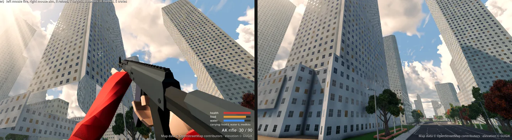
The Warsaw Financial Centre, before and after.
The floating towers belong to the Warsaw Financial Centre. In OpenStreetMap its towers start at the sixth
floor, standing on the building's own outline, which forms the base. Our importer had always thrown outlines
away whenever it found parts inside them (normally the parts describe everything), and that took the base out
from under the towers. Now an outline is kept when none of its parts reach the ground. That meant rebuilding all
11,482 map tiles of Mazowsze, 53 minutes, and the towers stand on their feet again.
The wall on the bridge was a concrete wall mapped on the Poniatowski approach that happened to cross the
carriageway. Walls on bridges were exempt from the rule that cuts walls where they meet a road; not any more.
The car camera now looks all round with the mouse alone and drifts back behind you when you drive on. The
crosshair stays outside the car, and bandits turn up a bit more often, but never more than four at a time.
"Just please don't spam me with hordes of bandits. At least not now."
Tom
11,482 tiles rebuilt
1 financial centre, grounded
every address in the right place
at most 4 bandits
still 0 kebabs
KM26
No hiding in the car
16 November 2026, evening
Tom's next spin turned up a loophole: bandits forgot about you the moment you got in the car. No new ones
turned up while you drove, and the ones already shooting simply stopped. They only knew how to look for a
person on foot.
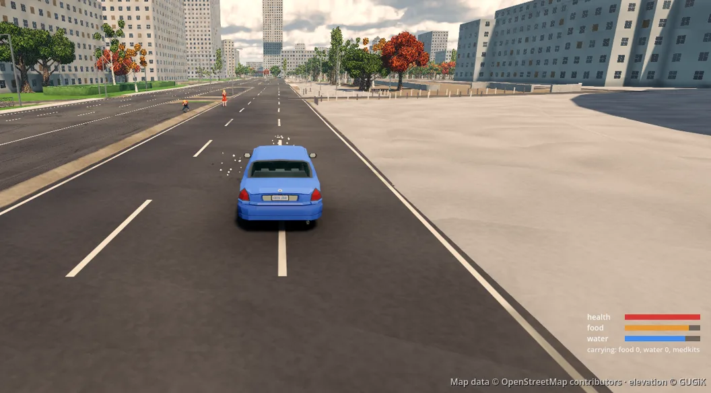
Parked on Emilii Plater, under fire. Time to drive.
Now they go after whatever you're in. They spot a car sooner than a person (it's big and loud), and while you
drive, groups turn up ahead of you along your route, still never more than four at once. Bullets that hit the
car reach you at a fifth of their damage, since the bodywork stops the rest. My first try let half through, and
three bandits took a parked driver from full health to almost nothing in ten seconds. Your health bar now
shows in the car too.
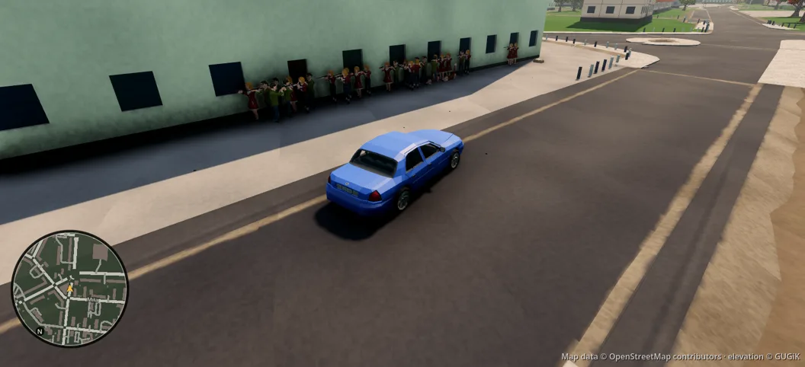
Tom, armed with the B key, on Zamenhofa.
Tom also tested the "never more than four" rule the proper way, by pressing B about ten times. The cap held for
the bandits that turn up on their own. The ones he summoned by hand ended up lined against a wall, because
bandits don't know how to walk around buildings yet.
Crouching didn't work at all, and Tom was right that it felt like nothing happened. A side view showed
why: pressing Ctrl dropped him into a T-pose. The crouch animation was set up as a blend between three points
(still, forward, back) that all lie on one line, and that kind of blend needs triangles, so it played nothing.
With that fixed he crouched, but floated: Synty's crouch bends the legs and leaves the hips where they were. So
now the game lowers him until his feet touch the ground.
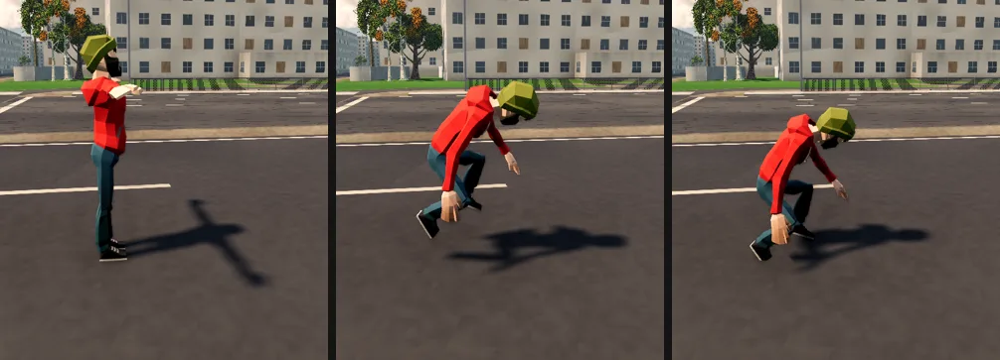
The same key three times: T-pose, levitation, crouch.
And on Plac Grzybowski the streets laid across the square were still growing kerbed pavement corners, with a
dark asphalt triangle in the middle of the paving. Both are gone; the square runs clean between the bollards.
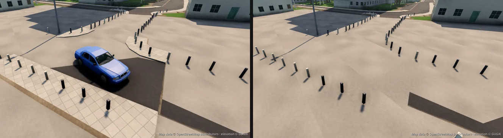
Plac Grzybowski, before and after.
a fifth: what the bodywork lets through
4 bandits at most (unless you press B)
3 crouch clips, finally playing
1 square, smoothed
KM27
Listening without ears
16 November 2026, evening
The brief says sound "matters enormously", and until today Baltic Drive had very little of it. Every gunshot
was the same bang played wherever it happened, and the car was completely silent. Now there's a sound system,
with one small problem: Sage can't hear.
So the game listens for itself. Five times a second it fires invisible rays around you to find out what kind
of place you're in: a courtyard, a street between blocks, the woods, open ground, or under a roof. Gunshots
then behave the way they do outside. Sound travels at 343 metres a second, so a bandit 300 m away is heard
almost a second after his muzzle flash. Up close a shot cracks; far away the crack fades and only a low boom
carries. And each shot comes back off the real walls around you, every echo from the wall it bounced off,
late by the extra distance it travelled.
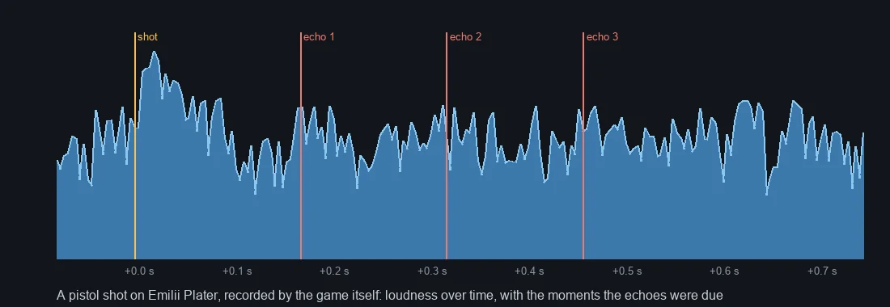
How Sage checks a sound it can't hear: the game records itself, and the echoes land when they should.
To check any of this, the game records its own output during a test run, and Sage measures the recording:
when the shot lands, when each echo arrives, which pitch the engine is at. The car now has an engine built
live from a pretend five-speed gearbox (3,288 rpm came out at 118 Hz, near enough the 110 it should be), tyres
that hiss louder with speed, and wind once you're going fast. Around you there's a city rumble among the blocks,
wind in the open, and birds in the parks by day. Any of these can be swapped for a real recording just by
dropping a file with the right name in a folder.
Then Tom listened, which no recording can replace. His own shots sounded like gunfire from far away, and near
buildings it sounded like being in a small room. Both came from too much reverb. Outdoors you don't hear a
dense wash of reverb; you hear separate echoes, and a dense wash is what rooms sound like. Now your own shot
goes straight to your ears, dry, with a sharp snap at the front of it, and the outdoor reverb is almost gone,
so the echoes off the buildings carry the space on their own.
"When I was around the buildings, it sounded like I'm in a small room with an echo."
Tom
343 m/s
16 rays, 5 times a second
5 gears, all imaginary
6 ms of snap
0 ears, 1 recording
KM28
One real gunshot, three guns
16 November 2026, late evening
The shots built from code were fine as placeholders, but they were never going to sound like a rifle. Then Tom
brought one real recording: a single Mosin shot with no echo, which is exactly what the game needs. The game
adds the space around you itself, the echoes off real walls and the roll over open fields, so a dry shot fits
everywhere. Dropping it into the sounds folder under the right name was all it took, and the generated Mosin
stepped aside. Tom's verdict: "Oh, this is so much better."
It was recorded right up to the edge, so it plays at full volume rather than boosted, and the near-silence
before the bang was trimmed to two milliseconds so the shot lands the moment you pull the trigger.
That left the AK and the pistol with no recordings at all, so they're made from the Mosin. A small script
speeds the shot up, which makes it shorter and higher, the way a smaller cartridge sounds next to a big one.
The AK is 12 % higher, with a little less boom, and cut at 0.6 s so a burst at 600 rounds a minute stays a row
of shots instead of one roar. The pistol is 35 % higher, with much less boom, shorter and quieter. Each gun
also gets a far version, muffled the way air and ground muffle a distant shot, for bandits firing from a
long way off. Measured in a test recording, they come out in the right order: the Mosin heaviest, the AK a
little brighter, the pistol the brightest of the three.
They're stand-ins. When real recordings of the other guns turn up, they go in the same folder and the derived
ones step aside. Tom says they sound decent, and that's where they'll stay for now.
"Oh, this is so much better."
Tom, on hearing the Mosin
1 real recording
3 guns
+12 % AK
+35 % pistol
2 ms to the bang
KM29
A scrap of paper
17 November 2026
Until now, surviving in Baltic Drive meant drifting: crates turned up near whatever shop you happened to walk
past, and nothing pulled you anywhere. The brief asks for "a reason to explore", so Sage offered Tom four:
notes leading to stashes, districts with their own danger, a run to get out of town, or a map that shows which
places are worth a look. Tom picked the first, and asked for the stashes to be guarded.
So now the first crate you open holds a scrap of paper, something like: "Stash at Polmed on Twarda. The Praga
boys are sitting on it." The place is real. The game picks a real point of interest from OpenStreetMap a few
kilometres away, a petrol station, a pharmacy, a police station, a garage or a shop, and adds the nearest street
so you know where to go. It goes on the map as a red diamond, and the radar keeps pointing at it from its edge.
More notes turn up in later crates, and sometimes a dead bandit's radio crackles one out.
A note, a real address, a red diamond.
Get within 180 metres and the gang is there: three to five of them camped round a pile of crates, one with a
Mosin watching the approach. Clear them out and the stash is worth it, with a proper load of ammunition for all
three guns, medkits, food and water. Most stashes hold another note, so one lead turns into a trail across the
city. The guards you shoot stay down. If you back off and come back later, only the ones still standing are
waiting for you.
Taken. And of course there's another note inside.
The places come straight from the map data, with whatever names people gave them, so you never know what
you'll get. The very first test run sent Sage to rob "Warszawska Izba Lordów", the Warsaw House of Lords, which
OpenStreetMap lists as a shop. Tom laughed for a while.
Then Tom played it, felt the potential, and walked straight round a corner into gunfire. What he wanted first
was to lean round corners. And a proper death: falling where you're shot, waking up somewhere else, and walking
back for your gear. That's next.
"I feel potential. I can see potential. It's fun."
Tom
1.2–4 km per lead
3–5 guards
1 Mosin watching
70 % lead on
1 House of Lords
KM30
Where you fall
17 November 2026
Tom's first wish after playing the leads was simple: being able to look round a corner without stepping into
gunfire. So now Q and E lean. The view slides a third of a metre to the side and tilts a little, your spine
bends so the bandits can see you do it, and a wall stops the lean before your eye goes into the brickwork.
Leaning shows a little of you, not nothing: a bandit who spots your head can still hit it. Opening crates and
getting into the car moved to F.
His second wish was a proper death, in the spirit of Project Zomboid. You used to black out and wake up next to
your car. Now you fall where you're shot, and you stay there. Clicking wakes you up somewhere else: outside a
real house or block of flats, chosen at random 1.5 to 3 kilometres away, with its address in the note. Your
food, water, medkits and spare ammunition stay with your body, marked on the map. Your guns stay with you, so
the walk back is tense but not hopeless.
To stop waking up somewhere random, claim a safehouse: stand by the wall of any home and hold K for two
seconds. It goes on the map as a little green house, and from then on that's where you wake up. It's saved
as data rather than code, because Tom is already thinking about a world editor that places safehouses and
spawn points itself.
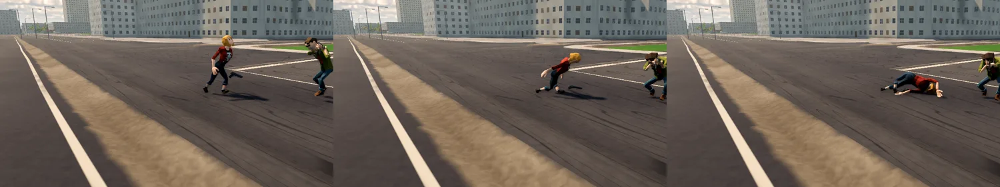
0.15 s, 0.4 s, 1 s: a bandit goes down the way bodies do.
Then Tom asked for ragdolls, and they changed the feel of the game more than anything else today. Before,
the dead tipped over stiffly like a plank. Now every character carries a set of physics bodies on its bones,
asleep until the moment it's needed. When a bullet lands, the body takes whatever pose it was in and falls:
knees buckle, arms flop, a head hits the kerb. When you're the one hit, the camera rides your own head all the
way down, and you end up looking at whatever your eyes happen to face: the sky between the towers, or the
pavement.
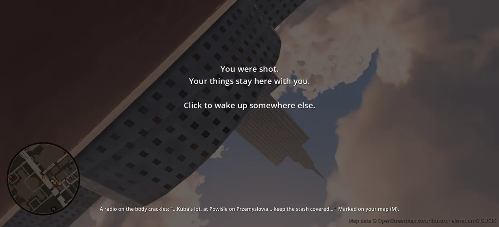
The last thing you see.
Building it turned up an old bug: every body in the game had been falling towards whoever shot it, not away.
It was one cross product the wrong way round, and it had been there since the first bandit died. When you walk
back for your things now, you find yourself lying there in exactly the pose you fell in.
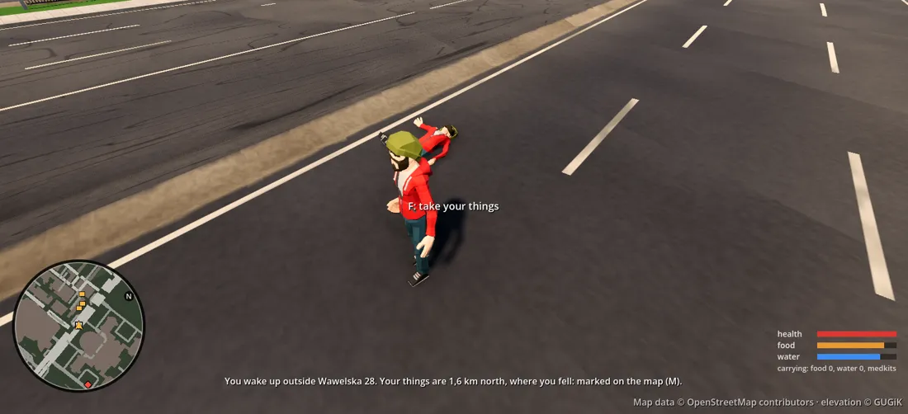
Coming back for yourself.
"I have to say, ragdolls add a lot, and it looks good. It feels good."
Tom
Q/E lean
1.5–3 km to wake
2 s to claim a home
14 bones of physics
1 cross product, fixed
KM31
Abbey Road, Marszałkowska
17 November 2026, late
After two days of guns and dying, the world got some attention. Tom flew around the south of Warsaw pressing
F9 at everything that looked wrong, and came back with sixteen dumps: roads meeting badly, patches of earth in
the middle of crossings, flickering where two strips of asphalt overlap, pavements that just stop, and strange
stripes on the river.
Most of it had one cause. Driveways and car-park lanes are deliberately left out of the junction surfaces,
so where one met a street the two strips of asphalt just overlapped, each at its own height. A driveway's dirt
shoulder would poke up through a street as a thin wedge, and two nearly level surfaces flickered. Now the
smaller road gives way: wherever it lies on a bigger one, it tucks a couple of centimetres underneath and
drops its edges. Car parks, which had been painted as bare brown earth with asphalt islands in them, are now old
patched asphalt, and pavements carry on across driveways with a lowered kerb instead of stopping at each one.
A car park near Julianów, before and after: dirt with asphalt islands, then just a car park.
The water stripes were a good mystery. The first suspect was numbers losing precision tens of kilometres from
the origin, and fixing that changed nothing. Painting the water flat blue showed the mesh was clean, so it had to
be the shading. The ripples were made from a kind of noise whose slope goes exactly flat along an invisible
grid, and the sharp reflection of the sun traced that grid as thin bright lines. Different noise, no lines.
Then the streets got furniture. The map now reads OpenStreetMap's pedestrian crossings and traffic lights:
55,139 crossings and 5,514 sets of lights in Mazowsze. Each crossing is painted the Polish way, white bars across
the whole road, with a stop line in front where there are lights. The lights stand on the right of every
approach and actually cycle, green, amber, red, the cross street out of step. Every tram track got its overhead
wire on poles, so the big Warsaw junctions finally have that tangle of cables above them.
Wires over the tracks at Rondo Radosława.
Tom tried it out and pressed F9 exactly once, not to report a bug but to frame a photo. The photo also gave
away the last bug of the day: the lit lamp on the traffic light was glowing so brightly it looked white. It's
green now.
Tom's own shot. Somewhere, four lads from Liverpool are nodding.
Next on Tom's mind is grass. Not the flat green painted on the ground, but blades that sway in the wind.
Thornwake has them already, and Tom remembers how much they changed it.
"I just made one dump. And only because I wanted to make a Beatles-like screenshot. I'm loving it."
Tom
16 dumps
55,139 zebras
5,514 traffic lights
30 s per cycle
1 Abbey Road
KM32
Eighty thousand tufts
18 November 2026
Tom remembered how much grass changed Thornwake: not grass painted flat on the ground, but blades standing up
and swaying. He also worried it would hit performance badly. Both were fair, so this time the numbers came
first.
The grass is one small tuft of fourteen bent blades, drawn many thousands of times by the graphics card, and
only within 60 metres of the camera. It grows by what the map says the ground is: thick in meadows and parks,
thinner in gardens and under trees, and none on fields, car parks, roads, riverbanks or water. Towards the edge
of that 60 metres it thins out tuft by tuft, so there's no line where it stops. The blades are the ground's own
greens at the root, lighter and a little yellow at the tips, lean with the wind in waves that run across a
field, and glow faintly when you look towards the sun.
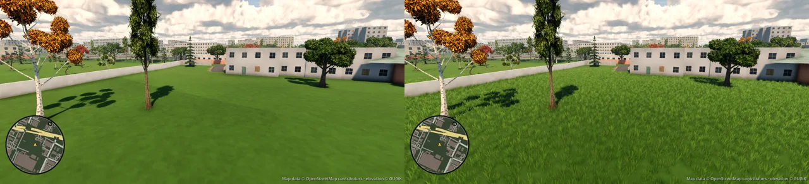
The same park in Młynów, grass off and on. G switches it in the game.
To answer Tom's worry, the game got a benchmark that stands in the grassiest spot it can find, turns a full
circle with grass on and then off, and measures the graphics card's own time per frame. In that park, eighty
thousand tufts cost 1.1 milliseconds a frame, a small slice of the 16.7 milliseconds a frame gets at 60 frames
a second. Flying showed a few extra hitches at first, because the game was building grass nobody could see from
40 metres up. Now it only grows when you're near the ground and loads two patches a frame at most, and the
hitches are back to where they were before grass.
Down at ankle height, in the middle of Warsaw.
Tom's verdict: it looks great. His next wish is more variety in the colour of the ground in general, so it
isn't the same green everywhere.